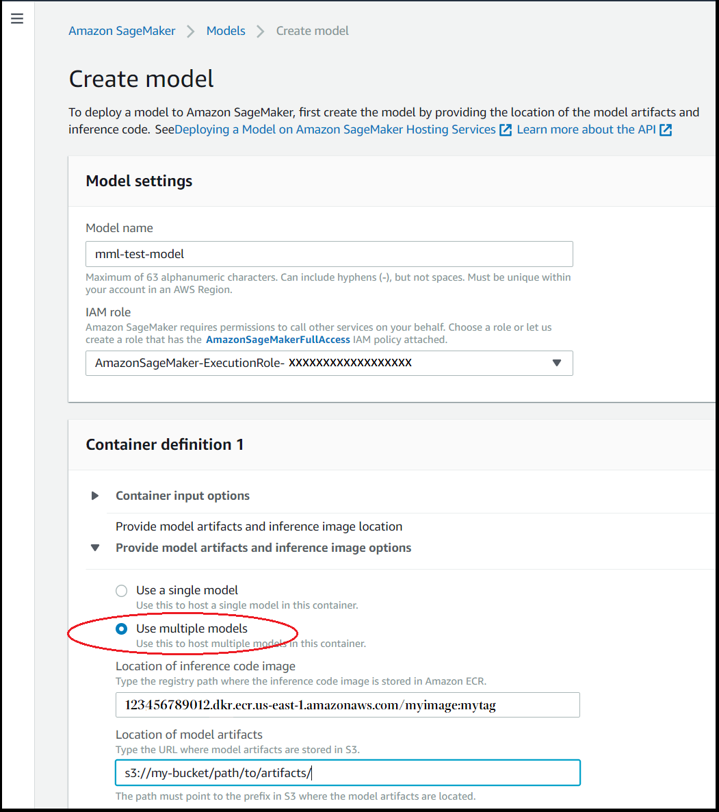

Create a Multi-Model Endpoint
You can use the SageMaker console or the AWS SDK for Python (Boto) to create a multi-model endpoint. To create either a CPU or GPU backed endpoint through the console, see the console procedure in the following sections. If you want to create a multi-model endpoint with the AWS SDK for Python (Boto), use either the CPU or GPU procedure in the following sections. The CPU and GPU workflows are similar but have several differences, such as the container requirements.
Topics
Create a multi-model endpoint (console)
You can create both CPU and GPU backed multi-model endpoints through the console. Use the following procedure to create a multi-model endpoint through the SageMaker console.
To create a multi-model endpoint (console)
-
Open the Amazon SageMaker console at https://console.aws.amazon.com/sagemaker/
. -
Choose Model, and then from the Inference group, choose Create model.
-
For Model name, enter a name.
-
For IAM role, choose or create an IAM role that has the
AmazonSageMakerFullAccessIAM policy attached. -
In the Container definition section, for Provide model artifacts and inference image options, choose Use multiple models.
 -
For the Inference container image, enter the Amazon ECR path for your desired container image.
For GPU models, you must use a container backed by the NVIDIA Triton Inference Server. For a list of container images that work with GPU backed endpoints, see the NVIDIA Triton Inference Containers (SM support only)
. For more information about the NVIDIA Triton Inference Server, see Use Triton Inference Server with SageMaker. -
Choose Create model.
-
Deploy your multi-model endpoint as you would a single model endpoint. For instructions, see Deploy the Model to SageMaker Hosting Services.
Create a multi-model endpoint using CPUs with the AWS SDK for Python (Boto3)
Use the following section to create a multi-model endpoint backed by CPU instances.
You create a multi-model endpoint using the Amazon SageMaker create_modelcreate_endpoint_configcreate_endpointMode parameter value, MultiModel. You also need to pass the
ModelDataUrl field that specifies the prefix in Amazon S3 where the model
artifacts are located, instead of the path to a single model artifact, as you would when
deploying a single model.
For a sample notebook that uses SageMaker to deploy multiple XGBoost models to an endpoint,
see Multi-Model Endpoint XGBoost Sample Notebook
The following procedure outlines the key steps used in that sample to create a CPU backed multi-model endpoint.
To deploy the model (AWS SDK for Python (Boto 3))
-
Get a container with an image that supports deploying multi-model endpoints. For a list of built-in algorithms and framework containers that support multi-model endpoints, see Supported algorithms, frameworks, and instances. For this example, we use the K-Nearest Neighbors (k-NN) Algorithm built-in algorithm. We call the SageMaker Python SDK
utility function image_uris.retrieve()to get the address for the K-Nearest Neighbors built-in algorithm image.import sagemaker region = sagemaker_session.boto_region_name image = sagemaker.image_uris.retrieve("knn",region=region) container = { 'Image': image, 'ModelDataUrl': 's3://<BUCKET_NAME>/<PATH_TO_ARTIFACTS>', 'Mode': 'MultiModel' } -
Get an AWS SDK for Python (Boto3) SageMaker client and create the model that uses this container.
import boto3 sagemaker_client = boto3.client('sagemaker') response = sagemaker_client.create_model( ModelName ='<MODEL_NAME>', ExecutionRoleArn = role, Containers = [container]) -
(Optional) If you are using a serial inference pipeline, get the additional container(s) to include in the pipeline, and include it in the
Containersargument ofCreateModel:preprocessor_container = { 'Image': '<ACCOUNT_ID>.dkr.ecr.<REGION_NAME>.amazonaws.com/<PREPROCESSOR_IMAGE>:<TAG>' } multi_model_container = { 'Image': '<ACCOUNT_ID>.dkr.ecr.<REGION_NAME>.amazonaws.com/<IMAGE>:<TAG>', 'ModelDataUrl': 's3://<BUCKET_NAME>/<PATH_TO_ARTIFACTS>', 'Mode': 'MultiModel' } response = sagemaker_client.create_model( ModelName ='<MODEL_NAME>', ExecutionRoleArn = role, Containers = [preprocessor_container, multi_model_container] )Note
You can use only one multi-model-enabled endpoint in a serial inference pipeline.
-
(Optional) If your use case does not benefit from model caching, set the value of the
ModelCacheSettingfield of theMultiModelConfigparameter toDisabled, and include it in theContainerargument of the call tocreate_model. The value of theModelCacheSettingfield isEnabledby default.container = { 'Image': image, 'ModelDataUrl': 's3://<BUCKET_NAME>/<PATH_TO_ARTIFACTS>', 'Mode': 'MultiModel' 'MultiModelConfig': { // Default value is 'Enabled' 'ModelCacheSetting': 'Disabled' } } response = sagemaker_client.create_model( ModelName ='<MODEL_NAME>', ExecutionRoleArn = role, Containers = [container] ) -
Configure the multi-model endpoint for the model. We recommend configuring your endpoints with at least two instances. This allows SageMaker to provide a highly available set of predictions across multiple Availability Zones for the models.
response = sagemaker_client.create_endpoint_config( EndpointConfigName ='<ENDPOINT_CONFIG_NAME>', ProductionVariants=[ { 'InstanceType': 'ml.m4.xlarge', 'InitialInstanceCount': 2, 'InitialVariantWeight': 1, 'ModelName':'<MODEL_NAME>', 'VariantName': 'AllTraffic' } ] )Note
You can use only one multi-model-enabled endpoint in a serial inference pipeline.
-
Create the multi-model endpoint using the
EndpointNameandEndpointConfigNameparameters.response = sagemaker_client.create_endpoint( EndpointName ='<ENDPOINT_NAME>', EndpointConfigName ='<ENDPOINT_CONFIG_NAME>')
Create a multi-model endpoint using GPUs with the AWS SDK for Python (Boto3)
Use the following section to create a GPU backed multi-model endpoint.
You create a multi-model endpoint using the Amazon SageMaker create_modelcreate_endpoint_configcreate_endpointMode parameter value, MultiModel. You also need to pass the
ModelDataUrl field that specifies the prefix in Amazon S3 where the model
artifacts are located, instead of the path to a single model artifact, as you would when
deploying a single model. For GPU backed multi-model endpoints, you also must use a container with the NVIDIA Triton Inference Server
that is optimized for running on GPU instances. For a list of container images that work with GPU backed endpoints,
see the NVIDIA Triton Inference Containers (SM support only)
For an example notebook that demonstrates how to create a multi-model endpoint backed by GPUs, see Run mulitple deep learning models on GPUs with Amazon SageMaker Multi-model endpoints (MME)
The following procedure outlines the key steps to create a GPU backed multi-model endpoint.
To deploy the model (AWS SDK for Python (Boto 3))
-
Define the container image. To create a multi-model endpoint with GPU support for ResNet models, define the container to use the NVIDIA Triton Server image. This container supports multi-model endpoints and is optimized for running on GPU instances. We call the SageMaker Python SDK
utility function image_uris.retrieve()to get the address for the image. For example:import sagemaker region = sagemaker_session.boto_region_name // Find the sagemaker-tritonserver image at // https://github.com/aws/amazon-sagemaker-examples/blob/main/sagemaker-triton/resnet50/triton_resnet50.ipynb // Find available tags at https://github.com/aws/deep-learning-containers/blob/master/available_images.md#nvidia-triton-inference-containers-sm-support-only image = "<ACCOUNT_ID>.dkr.ecr.<REGION_NAME>.amazonaws.com/sagemaker-tritonserver:<TAG>".format( account_id=account_id_map[region], region=region ) container = { 'Image': image, 'ModelDataUrl': 's3://<BUCKET_NAME>/<PATH_TO_ARTIFACTS>', 'Mode': 'MultiModel', "Environment": {"SAGEMAKER_TRITON_DEFAULT_MODEL_NAME": "resnet"}, } -
Get an AWS SDK for Python (Boto3) SageMaker client and create the model that uses this container.
import boto3 sagemaker_client = boto3.client('sagemaker') response = sagemaker_client.create_model( ModelName ='<MODEL_NAME>', ExecutionRoleArn = role, Containers = [container]) -
(Optional) If you are using a serial inference pipeline, get the additional container(s) to include in the pipeline, and include it in the
Containersargument ofCreateModel:preprocessor_container = { 'Image': '<ACCOUNT_ID>.dkr.ecr.<REGION_NAME>.amazonaws.com/<PREPROCESSOR_IMAGE>:<TAG>' } multi_model_container = { 'Image': '<ACCOUNT_ID>.dkr.ecr.<REGION_NAME>.amazonaws.com/<IMAGE>:<TAG>', 'ModelDataUrl': 's3://<BUCKET_NAME>/<PATH_TO_ARTIFACTS>', 'Mode': 'MultiModel' } response = sagemaker_client.create_model( ModelName ='<MODEL_NAME>', ExecutionRoleArn = role, Containers = [preprocessor_container, multi_model_container] )Note
You can use only one multi-model-enabled endpoint in a serial inference pipeline.
-
(Optional) If your use case does not benefit from model caching, set the value of the
ModelCacheSettingfield of theMultiModelConfigparameter toDisabled, and include it in theContainerargument of the call tocreate_model. The value of theModelCacheSettingfield isEnabledby default.container = { 'Image': image, 'ModelDataUrl': 's3://<BUCKET_NAME>/<PATH_TO_ARTIFACTS>', 'Mode': 'MultiModel' 'MultiModelConfig': { // Default value is 'Enabled' 'ModelCacheSetting': 'Disabled' } } response = sagemaker_client.create_model( ModelName ='<MODEL_NAME>', ExecutionRoleArn = role, Containers = [container] ) -
Configure the multi-model endpoint with GPU backed instances for the model. We recommend configuring your endpoints with more than one instance to allow for high availability and higher cache hits.
response = sagemaker_client.create_endpoint_config( EndpointConfigName ='<ENDPOINT_CONFIG_NAME>', ProductionVariants=[ { 'InstanceType': 'ml.g4dn.4xlarge', 'InitialInstanceCount': 2, 'InitialVariantWeight': 1, 'ModelName':'<MODEL_NAME>', 'VariantName': 'AllTraffic' } ] ) -
Create the multi-model endpoint using the
EndpointNameandEndpointConfigNameparameters.response = sagemaker_client.create_endpoint( EndpointName ='<ENDPOINT_NAME>', EndpointConfigName ='<ENDPOINT_CONFIG_NAME>')